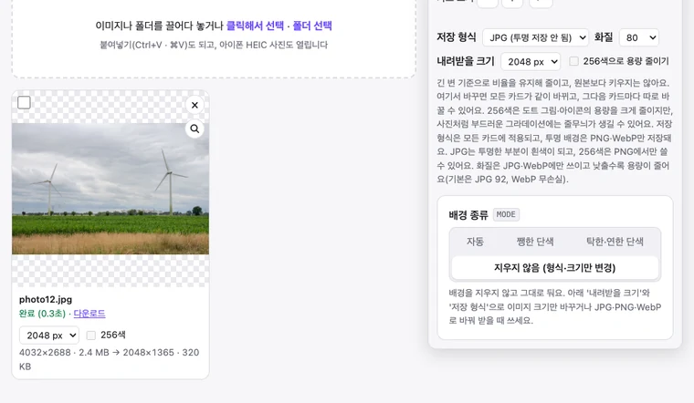

이미지 용량 줄이기: 사진 화질은 지키고 용량만 줄이는 법
메일 첨부 용량 제한에 걸리거나, 서류 제출 사이트가 “1MB 이하”를 요구하거나, 블로그 사진이 느리게 뜰 때 이미지 용량을 줄여야 합니다. 용량을 줄이는 방법은 크게 세 가지인데, 효과는 크게 다릅니다. 실제 사진으로 재 본 결과와 BGPeel로 여러 장을 한 번에 줄이는 방법을 정리했습니다.
용량을 줄이는 세 가지 방법
- 크기(해상도) 줄이기: 가로세로 픽셀 수를 줄입니다. 가로세로를 절반으로 줄이면 픽셀 수는 4분의 1이 되어, 가장 확실하게 줄어듭니다. 휴대폰 사진은 대부분 가로 4000px 안팎인데, 화면에서 볼 사진이라면 2048px로도 충분합니다.
- 화질 낮추기: JPG·WebP는 압축할 때 눈에 덜 띄는 정보를 버리는데, 화질 값이 낮을수록 더 많이 버립니다. 80 정도까지는 눈으로 차이를 찾기 어렵습니다.
- 형식 바꾸기: 사진은 JPG나 WebP가 알맞고, PNG는 사진에서 용량이 매우 커집니다. 반대로 스크린샷·그림·아이콘은 PNG를 256색으로 줄이는 방법이 효과적입니다.
직접 재 본 결과
Aaron Rust가 CC0(저작권 없음)로 공개한 사진을 4032×2688 크기, 화질 90의 JPG(2.4MB)로 저장해 휴대폰 사진처럼 만들었습니다. 이 사진을 BGPeel에서 설정만 바꿔 가며 받은 결과입니다. 측정 환경은 Apple M1 맥북의 크롬 155이고, 한 장 받는 데 0.2초 안팎이 걸렸습니다.
| 받는 설정 | 용량 | 원본 대비 |
|---|---|---|
| 원본 (JPG, 4032×2688) | 2.4MB | – |
| JPG 기본 화질(92), 크기 그대로 | 1.9MB | −20% |
| JPG 화질 80, 크기 그대로 | 1.1MB | −53% |
| JPG 화질 60, 크기 그대로 | 749KB | −69% |
| WebP 화질 80, 크기 그대로 | 808KB | −67% |
| JPG 화질 80, 2048px | 320KB | −87% |
| WebP 화질 80, 2048px | 237KB | −90% |
| JPG 화질 80, 1024px | 95KB | −96% |
표에서 보이듯 크기를 2048px로 줄이는 것이 화질을 60까지 낮추는 것보다 효과가 컸습니다. 크기 그대로 화질만 92로 다시 저장해도 20%가 줄었는데, 프로그램마다 JPG를 압축하는 방식이 달라서 생긴 차이입니다. 원본이 이미 강하게 압축된 사진이라면 이만큼 줄지 않을 수 있습니다.
화질 80이면 티가 날까
사진에서 화질에 따른 차이가 가장 컸던 부분(마른 풀)을 골라 2배로 확대해 보았습니다.

차이가 가장 큰 곳을 골라 확대해도 92와 80은 구분하기 어렵고, 60에서야 가는 풀잎이 아주 조금 뭉개집니다. 사진이라면 화질 80과 2048px 조합을 먼저 써 보고, 더 줄여야 할 때 화질 60이나 1024px로 내리는 순서를 권합니다. 글자가 많은 스크린샷처럼 경계가 날카로운 이미지는 JPG로 압축하면 글자 둘레가 지저분해지기 쉬워 PNG가 낫습니다.
크기는 얼마로 줄일까
기준은 간단합니다. 사진이 보일 화면 폭의 2배면 충분합니다. 요즘 휴대폰 화면은 세로로 들었을 때 가로가 1080~1290픽셀 안팎이라, 휴대폰 화면을 꽉 채워 보는 사진도 2048px면 넉넉합니다. 블로그 본문은 대개 폭 700~900px로 보이므로, 선명한 고해상도 화면을 생각해도 1600~2048px면 충분합니다. 메신저 앱은 사진을 보낼 때 스스로 다시 줄이는 경우가 많아서, 원본 크기로 보내도 받는 사람에게는 작게 도착하기도 합니다.
인쇄할 사진은 다릅니다. 인쇄는 1인치(2.54cm)당 300픽셀 정도가 필요해서, 4×6인치(약 10×15cm) 사진이면 1800×1200, A4 한 장 전체면 3508×2480 정도가 필요합니다. 인화나 출판에 쓸 사진은 크기를 줄이지 말고, 꼭 줄여야 한다면 화질만 조금 낮추세요.
BGPeel로 여러 장 한 번에 줄이기
- 위 링크로 들어가면 ‘배경 종류’는 ‘지우지 않음’, ‘저장 형식’은 JPG로 맞춰져 있습니다.
- 사진이나 폴더를 끌어다 놓습니다. JPG, PNG, WebP는 물론 아이폰 HEIC 사진도 됩니다.
- ‘화질’과 ‘내려받을 크기’를 고릅니다. 크기는 2048·1024px 중에 고르거나 ‘직접 입력’으로 1600처럼 원하는 값을 적습니다. 긴 변 기준으로 비율을 유지해 줄이고, 원본보다 키우지는 않습니다.
- ‘변환 시작’을 누른 뒤, 한 장씩 ‘다운로드’하거나 ‘zip 다운로드’로 받습니다.

카드에는 ‘원본 크기·용량 → 받을 크기·용량’이 표시되고, 받을 용량은 한 번 받은 뒤에 나타납니다. 결과는 원본 해상도로 메모리에 남아 있어서, 화질이나 크기를 바꿔 가며 다시 받아 보고 용량을 비교할 수 있습니다. zip으로 받으면 상태 줄에 전체 용량이 얼마에서 얼마로 줄었는지도 나옵니다.
용도별 추천 설정
| 용도 | 추천 | 이 글의 사진 기준 용량 |
|---|---|---|
| 메신저·SNS·블로그에 올릴 사진 | JPG 80, 2048px | 320KB |
| 웹사이트에 올릴 사진(더 가볍게) | WebP 80, 2048px | 237KB |
| “1MB 이하” 같은 제출 제한 | JPG 80, 2048px부터 시도 | 320KB |
| 아주 작아야 할 때(썸네일 등) | JPG 80, 1024px | 95KB |
| 스크린샷·그림·아이콘 | PNG + 256색 | 그림 종류에 따라 64~81% 감소(실측) |
알아 둘 점
- 원본은 따로 두세요. JPG는 저장할 때마다 정보를 조금씩 버립니다. 줄인 파일을 다시 줄이는 일을 반복하면 화질이 계속 떨어지니, 항상 원본에서 다시 만드는 편이 좋습니다.
- 위치 정보가 지워집니다. 줄인 파일에는 촬영 위치(GPS), 카메라 정보, 촬영 날짜 같은 메타데이터가 들어가지 않습니다. 공유할 때는 안전하지만, 날짜순 정리가 필요한 원본 보관용으로는 맞지 않습니다.
- 투명 배경은 JPG에 저장되지 않습니다. 투명한 부분이 흰색으로 채워지므로, 투명 배경이 필요하면 PNG나 WebP를 고르세요.
- 업로드 없이 처리됩니다. TinyPNG처럼 파일을 서버로 올려 압축하는 서비스와 달리, BGPeel은 브라우저 안에서만 처리합니다. 개인 사진이나 회사 자료도 기기 밖으로 나가지 않습니다.
자주 묻는 질문
- PNG를 PNG로 저장했는데 왜 안 줄어드나요?
- PNG는 정보를 버리지 않는 형식이라 같은 크기로 다시 저장해도 거의 그대로입니다. 사진이라면 JPG나 WebP로 바꾸고, 그림·아이콘이라면 ‘256색으로 용량 줄이기’를 켜세요.
- “500KB 이하”처럼 용량을 정해서 줄일 수 있나요?
- 목표 용량을 직접 적는 기능은 없습니다. 대신 카드에 받은 파일의 용량이 바로 표시되므로, 화질 80·2048px로 받아 보고 넘치면 화질 60이나 1024px로 한 단계씩 내려 보세요. 결과가 메모리에 남아 있어 다시 받는 데 1초도 걸리지 않습니다.
- 몇 장까지 한 번에 되나요?
- 정해진 제한은 없습니다. 폴더째 넣으면 하위 폴더까지 들어가고, zip 안에 같은 폴더 구조로 담깁니다.
- 아이폰 사진(HEIC)도 줄일 수 있나요?
- 네. HEIC를 넣으면 JPG나 WebP로 바꾸면서 함께 줄일 수 있습니다. 자세한 내용은 HEIC를 JPG로 변환하기를 참고하세요.